Entering Protected Mode
“With great power comes great responsibility.” - Voltaire / Spider-Man
As you may recall from previous chapters, our BIOS only loads the first sector to RAM, which leaves about just shy of 512 bytes1.
After we read from disk, it will enable us to write much more code, because we will not be limited to 512 bytes.
But just before we do that, we don’t want to limit ourselves to only 16bit instructions.
For that we need to enter protected mode which will allow us to unlock some CPU features such as 32bit instructions.
Entering protected mode requires us to initialize the Global Descriptor Table (GDT) which is a CPU structure that will be discussed in depth below, as well as toggling the protected mode bit in cr0.
The Global Descriptor Table
All the information about the Global Descriptor Table is taken from both the Intel Manual Volume 3A section 3.4.5, and the great osdev website.
This is a structure that is specific to the x86 CPU family, and it contains information about the different segments. In general, segments are used to divide memory into logical parts, and to translate addresses as we seen in real mode.
Address translation with the GDT will not be wildly used in this chapter, because it will not be used throughout the OS. Instead, memory paging will be used and explained in the next chapter. For now, think of a memory segment as a fixed size blob of contiguous physical memory.
In protected mode, the common way to organize memory is using these segments. Because segment registers2 hold only one number,
they can’t hold enough information for us. That is where the Global Descriptor Table comes in place.
The Global Descriptor Table is an array of structures that include information about a segment.
When we want to use our custom segment, we load its offset on the GDT to the segment register.
For example, we can create a segment for user data at index 1 of our table.
This segment will not hold important data for the system or code that can be executed.
If we want to load it into the ds we will set it to the offset of the structure in the table.
Each entry is 8 bytes long, index one will be at an offset of 8, which means we will set ds=8
Instead of just revealing the structure that is used for each segment, I want you to pause and ponder: what information should each segment include?
Remember that some instructions assume segments, like mov, jmp etc. and we want segments for the kernel, users, data and code.
When I asked myself this question, I came up with the following ideas:
- What is the initial address of the segment. i.e the start address in memory where the segment starts.
- What is the end address of the segment. i.e the end address in memory where the segment ends.
- What the segment includes. i.e data segment, code segment etc.
- What is the privilege level of the segment. i.e can anyone access it or only the kernel
- For a data segment, Is the data read only, or may I modify it?
- For a code segment, can I execute it or not yet.
If you guessed something similar to this, you are mostly correct!
Our entry will look like this:

But what are these fields?
- Base: This is a 32-bit value, which is split on the entire entry and represents the address of where the segment begins.
- Limit: This is a 20-bit value, which is split on the entire entry and represents the size of the segment.
- Access Byte: Flags that are relevant to the memory range of the segment, like the access privileges of this segment.
- Flags: General flags that are relevant for the entry fields.
All of these fields will become a struct and together they represent a single entry in our GDT.
Both the AccessByte, the LimitFlags, and more structures throughout the book, are using one bit flags, which represent some inner settings of the CPU.
Although setting a one bit flag is easy, and can be done with 1 << bit_number to set the nth bit, we would like abstractions such as set_<flag_name>, which are more readable and less prone to errors.
But, if we would do that to every flag, it will be A LOT of boilerplate code.
For this reason, Rust provides us with an amazing macro system.
If you read through some previous version of this book, you may have seen the explanation of the flag! proc-macro, which was used like this:
impl AccessByte { flag!(readable, 1); }This macro was used to define those exactly 1 bit flags. But as it will turn out, this is not enough, and more functionality will be needed.
The problem with this macro is that it had to be called for each bit flag. Because it did not take multiple flags, the macro did not have enough context to generate a Debug trait implementation that shows bit flag names.
More problems that I was having, but not a direct outcome of the initial design, is that flags sometimes contain more than 1 bit, and may contain n bits, also, certain n bit flags may have a specific set of values that are valid, and we may want to name them in an enum.
The current design of the macro looks like this:
#[bitfields]
pub struct AccessByte {
#[flag(r)]
accessed: B1,
readable_writable: B1,
direction_conforming: B1,
executable: B1,
#[flag(flag_type = SegmentDescriptorType)]
segment_type: B1,
#[flag(flag_type = ProtectionLevel)]
dpl: B2,
present: B1,
}As you can see, we have the macro attribute at the top of our struct, which is called bitfields.
-
Each field in this struct is a flag, and as you can see, the highlighter is smart and can expand our macro, so the color of the fields are the same as a function.
-
The type of each field represents the flag width in bits. B1 is one bit and B20 is 20 bits.
-
Some flags may have their own attribute such as
randwwhich create a read function and a write function, respectively. When they are not defined, both functions are created. -
Flags may also contain types, which are mostly enums that contains the valid values, or even all the values but gives them a readable name.
-
While this macro seems complex, it will just create the functions that will help us to set flags in a convenient way.
To see what this macro generated, we can use the amazing
cargo-expandtool created byDavid TolnayFor example, the expansion of the call above.
#![feature(const_trait_impl)] use super::enums::{ProtectionLevel, SegmentDescriptorType}; #[repr(transparent)] pub struct AccessByte(u8); #[automatically_derived] impl ::core::marker::Copy for AccessByte {} #[automatically_derived] #[doc(hidden)] unsafe impl ::core::clone::TrivialClone for AccessByte {} #[automatically_derived] impl ::core::clone::Clone for AccessByte { #[inline] fn clone(&self) -> AccessByte { let _: ::core::clone::AssertParamIsClone<u8>; *self } } impl AccessByte { #[inline] pub const fn new() -> Self { Self(0) } #[inline] #[track_caller] fn is_accessed(&self) -> bool { unsafe { let addr: *mut u8 = self as *const _= AccessByte as *mut u8; let val: u8 = ::core::ptr::read_volatile(src: addr); let mask: u8 = (u8::MAX >> (u8::BITS - 1usize as u32)) << 0usize; let bits: u8 = (val & mask) >> 0usize; <bool as ::core::convert::TryFrom<u8>>::try_from(bits as u8) Result<bool, TryFromIntError> .expect("Cannot convert bit representation into bool") } } #[inline] #[track_caller] fn is_readable_writable(&self) -> bool { unsafe { let addr: *mut u8 = self as *const _= AccessByte as *mut u8; let val: u8 = ::core::ptr::read_volatile(src: addr); let mask: u8 = (u8::MAX >> (u8::BITS - 1usize as u32)) << 1usize; let bits: u8 = (val & mask) >> 1usize; <bool as ::core::convert::TryFrom<u8>>::try_from(bits as u8) Result<bool, TryFromIntError> .expect("Cannot convert bit representation into bool") } } #[inline] #[track_caller] fn set_readable_writable(&mut self, v: bool) { let v: u8 = <u8 as ::core::convert::TryFrom<_= bool>>::try_from(v) Result<u8, Infallible> .ok() Option<u8> .expect("Can't convert value 'v' (bool) into u8"); if true { if !((v as u8) <= (1u128 as u8)) { { ::core::panicking::panic_fmt(format_args!( "AccessByte::set_readable_writable: value out of \ range: must fit in 1 bits (max 0x1)", )); } } } unsafe { let addr: *mut u8 = self as *const _= AccessByte as *mut u8; let val: u8 = ::core::ptr::read_volatile(src: addr); let mask: u8 = (u8::MAX >> (u8::BITS - 1usize as u32)) << 1usize; let cleared: u8 = val & !mask; let new: u8 = cleared | ((v as u8) << 1usize); ::core::ptr::write_volatile(dst: addr, src: new); } } fn set_readable_writable #[inline] #[track_caller] const fn readable_writable(mut self, v: bool) -> Self { let v: u8 = <u8 as ::core::convert::TryFrom<_= bool>>::try_from(v) Result<u8, Infallible> .ok() Option<u8> .expect("Can't convert value 'v' (bool) into u8"); if true { if !((v as u8) <= (1u128 as u8)) { { ::core::panicking::panic_fmt(format_args!( "AccessByte::readable_writable: value out of \ range: must fit in 1 bits (max 0x1)", )); } } } self.0 |= (v as u8) << 1usize; self } const fn readable_writable #[inline] #[track_caller] fn is_direction_conforming(&self) -> bool { unsafe { let addr: *mut u8 = self as *const _= AccessByte as *mut u8; let val: u8 = ::core::ptr::read_volatile(src: addr); let mask: u8 = (u8::MAX >> (u8::BITS - 1usize as u32)) << 2usize; let bits: u8 = (val & mask) >> 2usize; <bool as ::core::convert::TryFrom<u8>>::try_from(bits as u8) Result<bool, TryFromIntError> .expect("Cannot convert bit representation into bool") } } #[inline] #[track_caller] fn set_direction_conforming(&mut self, v: bool) { let v: u8 = <u8 as ::core::convert::TryFrom<_= bool>>::try_from(v) Result<u8, Infallible> .ok() Option<u8> .expect("Can't convert value 'v' (bool) into u8"); if true { if !((v as u8) <= (1u128 as u8)) { { ::core::panicking::panic_fmt(format_args!( "AccessByte::set_direction_conforming: value out \ of range: must fit in 1 bits (max 0x1)", )); } } } unsafe { let addr: *mut u8 = self as *const _= AccessByte as *mut u8; let val: u8 = ::core::ptr::read_volatile(src: addr); let mask: u8 = (u8::MAX >> (u8::BITS - 1usize as u32)) << 2usize; let cleared: u8 = val & !mask; let new: u8 = cleared | ((v as u8) << 2usize); ::core::ptr::write_volatile(dst: addr, src: new); } } fn set_direction_conforming #[inline] #[track_caller] const fn direction_conforming(mut self, v: bool) -> Self { let v: u8 = <u8 as ::core::convert::TryFrom<_= bool>>::try_from(v) Result<u8, Infallible> .ok() Option<u8> .expect("Can't convert value 'v' (bool) into u8"); if true { if !((v as u8) <= (1u128 as u8)) { { ::core::panicking::panic_fmt(format_args!( "AccessByte::direction_conforming: value out of \ range: must fit in 1 bits (max 0x1)", )); } } } self.0 |= (v as u8) << 2usize; self } const fn direction_conforming #[inline] #[track_caller] fn is_executable(&self) -> bool { unsafe { let addr: *mut u8 = self as *const _= AccessByte as *mut u8; let val: u8 = ::core::ptr::read_volatile(src: addr); let mask: u8 = (u8::MAX >> (u8::BITS - 1usize as u32)) << 3usize; let bits: u8 = (val & mask) >> 3usize; <bool as ::core::convert::TryFrom<u8>>::try_from(bits as u8) Result<bool, TryFromIntError> .expect("Cannot convert bit representation into bool") } } #[inline] #[track_caller] fn set_executable(&mut self, v: bool) { let v: u8 = <u8 as ::core::convert::TryFrom<_= bool>>::try_from(v) Result<u8, Infallible> .ok() Option<u8> .expect("Can't convert value 'v' (bool) into u8"); if true { if !((v as u8) <= (1u128 as u8)) { { ::core::panicking::panic_fmt(format_args!( "AccessByte::set_executable: value out of range: \ must fit in 1 bits (max 0x1)", )); } } } unsafe { let addr: *mut u8 = self as *const _= AccessByte as *mut u8; let val: u8 = ::core::ptr::read_volatile(src: addr); let mask: u8 = (u8::MAX >> (u8::BITS - 1usize as u32)) << 3usize; let cleared: u8 = val & !mask; let new: u8 = cleared | ((v as u8) << 3usize); ::core::ptr::write_volatile(dst: addr, src: new); } } fn set_executable #[inline] #[track_caller] const fn executable(mut self, v: bool) -> Self { let v: u8 = <u8 as ::core::convert::TryFrom<_= bool>>::try_from(v) Result<u8, Infallible> .ok() Option<u8> .expect("Can't convert value 'v' (bool) into u8"); if true { if !((v as u8) <= (1u128 as u8)) { { ::core::panicking::panic_fmt(format_args!( "AccessByte::executable: value out of range: \ must fit in 1 bits (max 0x1)", )); } } } self.0 |= (v as u8) << 3usize; self } const fn executable #[inline] #[track_caller] fn get_segment_type(&self) -> SegmentDescriptorType { unsafe { let addr: *mut u8 = self as *const _= AccessByte as *mut u8; let val: u8 = ::core::ptr::read_volatile(src: addr); let mask: u8 = (u8::MAX >> (u8::BITS - 1usize as u32)) << 4usize; let bits: u8 = (val & mask) >> 4usize; <SegmentDescriptorType as ::core::convert::TryFrom< u8, >>::try_from(bits as u8) Result<SegmentDescriptorType, ConversionError<u8>> .expect( "Cannot convert bit representation into SegmentDescriptorType", ) } } #[inline] #[track_caller] fn set_segment_type(&mut self, v: SegmentDescriptorType) { let v: u8 = <u8 as ::core::convert::TryFrom<_= SegmentDescriptorType>>::try_from(v) Result<u8, Infallible> .ok() Option<u8> .expect( "Can't convert value 'v' (SegmentDescriptorType) into u8", ); if true { if !((v as u8) <= (1u128 as u8)) { { ::core::panicking::panic_fmt(format_args!( "AccessByte::set_segment_type: value out of \ range: must fit in 1 bits (max 0x1)", )); } } } unsafe { let addr: *mut u8 = self as *const _= AccessByte as *mut u8; let val: u8 = ::core::ptr::read_volatile(src: addr); let mask: u8 = (u8::MAX >> (u8::BITS - 1usize as u32)) << 4usize; let cleared: u8 = val & !mask; let new: u8 = cleared | ((v as u8) << 4usize); ::core::ptr::write_volatile(dst: addr, src: new); } } fn set_segment_type #[inline] #[track_caller] const fn segment_type(mut self, v: SegmentDescriptorType) -> Self { let v: u8 = <u8 as ::core::convert::TryFrom<_= SegmentDescriptorType>>::try_from(v) Result<u8, Infallible> .ok() Option<u8> .expect( "Can't convert value 'v' (SegmentDescriptorType) into u8", ); if true { if !((v as u8) <= (1u128 as u8)) { { ::core::panicking::panic_fmt(format_args!( "AccessByte::segment_type: value out of range: \ must fit in 1 bits (max 0x1)", )); } } } self.0 |= (v as u8) << 4usize; self } const fn segment_type #[inline] #[track_caller] fn get_dpl(&self) -> ProtectionLevel { unsafe { let addr: *mut u8 = self as *const _= AccessByte as *mut u8; let val: u8 = ::core::ptr::read_volatile(src: addr); let mask: u8 = (u8::MAX >> (u8::BITS - 2usize as u32)) << 5usize; let bits: u8 = (val & mask) >> 5usize; <ProtectionLevel as ::core::convert::TryFrom<u8>>::try_from( bits as u8, ) Result<ProtectionLevel, ConversionError<u8>> .expect( "Cannot convert bit representation into ProtectionLevel", ) } } #[inline] #[track_caller] fn set_dpl(&mut self, v: ProtectionLevel) { let v: u8 = <u8 as ::core::convert::TryFrom<_= ProtectionLevel>>::try_from(v) Result<u8, Infallible> .ok() Option<u8> .expect("Can't convert value 'v' (ProtectionLevel) into u8"); if true { if !((v as u8) <= (3u128 as u8)) { { ::core::panicking::panic_fmt(format_args!( "AccessByte::set_dpl: value out of range: must \ fit in 2 bits (max 0x3)", )); } } } unsafe { let addr: *mut u8 = self as *const _= AccessByte as *mut u8; let val: u8 = ::core::ptr::read_volatile(src: addr); let mask: u8 = (u8::MAX >> (u8::BITS - 2usize as u32)) << 5usize; let cleared: u8 = val & !mask; let new: u8 = cleared | ((v as u8) << 5usize); ::core::ptr::write_volatile(dst: addr, src: new); } } fn set_dpl #[inline] #[track_caller] const fn dpl(mut self, v: ProtectionLevel) -> Self { let v: u8 = <u8 as ::core::convert::TryFrom<_= ProtectionLevel>>::try_from(v) Result<u8, Infallible> .ok() Option<u8> .expect("Can't convert value 'v' (ProtectionLevel) into u8"); if true { if !((v as u8) <= (3u128 as u8)) { { ::core::panicking::panic_fmt(format_args!( "AccessByte::dpl: value out of range: must fit \ in 2 bits (max 0x3)", )); } } } self.0 |= (v as u8) << 5usize; self } const fn dpl #[inline] #[track_caller] fn is_present(&self) -> bool { unsafe { let addr: *mut u8 = self as *const _= AccessByte as *mut u8; let val: u8 = ::core::ptr::read_volatile(src: addr); let mask: u8 = (u8::MAX >> (u8::BITS - 1usize as u32)) << 7usize; let bits: u8 = (val & mask) >> 7usize; <bool as ::core::convert::TryFrom<u8>>::try_from(bits as u8) Result<bool, TryFromIntError> .expect("Cannot convert bit representation into bool") } } #[inline] #[track_caller] fn set_present(&mut self, v: bool) { let v: u8 = <u8 as ::core::convert::TryFrom<_= bool>>::try_from(v) Result<u8, Infallible> .ok() Option<u8> .expect("Can't convert value 'v' (bool) into u8"); if true { if !((v as u8) <= (1u128 as u8)) { { ::core::panicking::panic_fmt(format_args!( "AccessByte::set_present: value out of range: \ must fit in 1 bits (max 0x1)", )); } } } unsafe { let addr: *mut u8 = self as *const _= AccessByte as *mut u8; let val: u8 = ::core::ptr::read_volatile(src: addr); let mask: u8 = (u8::MAX >> (u8::BITS - 1usize as u32)) << 7usize; let cleared: u8 = val & !mask; let new: u8 = cleared | ((v as u8) << 7usize); ::core::ptr::write_volatile(dst: addr, src: new); } } fn set_present #[inline] #[track_caller] const fn present(mut self, v: bool) -> Self { let v: u8 = <u8 as ::core::convert::TryFrom<_= bool>>::try_from(v) Result<u8, Infallible> .ok() Option<u8> .expect("Can't convert value 'v' (bool) into u8"); if true { if !((v as u8) <= (1u128 as u8)) { { ::core::panicking::panic_fmt(format_args!( "AccessByte::present: value out of range: must \ fit in 1 bits (max 0x1)", )); } } } self.0 |= (v as u8) << 7usize; self } const fn present } impl AccessByte impl const ::core::convert::From<u8> for AccessByte { fn from(value: u8) -> Self { AccessByte(value) } } impl const ::core::convert::From<AccessByte> for u8 { fn from(value: AccessByte) -> Self { value.0 } } impl ::core::fmt::Debug for AccessByte { fn fmt( &self, f: &mut ::core::fmt::Formatter<'a:'_>, ) -> ::core::fmt::Result { f.debug_struct(name: "AccessByte") DebugStruct<'_, '_> .field(name: "accessed", value: &self.is_accessed()) &mut DebugStruct<'_, '_> .field(name: "readable_writable", value: &self.is_readable_writable()) &mut DebugStruct<'_, '_> .field(name: "direction_conforming", value: &self.is_direction_conforming()) &mut DebugStruct<'_, '_> .field(name: "executable", value: &self.is_executable()) &mut DebugStruct<'_, '_> .field(name: "segment_type", value: &self.get_segment_type()) &mut DebugStruct<'_, '_> .field(name: "dpl", value: &self.get_dpl()) &mut DebugStruct<'_, '_> .field(name: "present", value: &self.is_present()) &mut DebugStruct<'_, '_> .finish() } } impl Debug for AccessByte
If this macro seems really cool and complicated, that’s great! because it will be fully explained and implemented in later chapters.
We will also define an enum that will include the protection level and the system segment flags so that they have clear names.
#[repr(u8)]
#[derive(
Debug, Clone, Copy, ConstTryFromPrimitive, ConstIntoPrimitive,
)]
#[num_enum(error_type(name = ConversionError<u8>, constructor = ConversionError::CantConvertFrom))]
pub enum ProtectionLevel {
Ring0 = 0,
Ring1 = 1,
Ring2 = 2,
Ring3 = 3,
}
#[repr(u8)]
#[derive(
Copy, Clone, Debug, ConstTryFromPrimitive, ConstIntoPrimitive,
)]
#[num_enum(error_type(name = ConversionError<u8>, constructor = ConversionError::CantConvertFrom))]
pub enum SegmentDescriptorType {
System = 0,
CodeOrData = 1,
}Now, just before creating a new function for our entry, we don’t want to specify the base in three parts and the limit in two parts every time. Instead, we want the new function to do that for us.
#[repr(C, packed)]
struct GlobalDescriptorTableEntry32 {
limit_low: u16,
base_low: u16,
base_mid: u8,
access_byte: AccessByte,
limit_flags: LimitFlags,
base_high: u8,
}
impl GlobalDescriptorTableEntry32 {
/// Create a new entry
///
/// # Parameters
///
/// - `base`: The base address of the segment
/// - `limit`: The size of the segment
/// - `access_byte`: The type and access privileges of the entry
/// - `flags`: Configuration flags of the entry
// ANCHOR: gdt_entry32_new
pub const fn new(
base: u32,
limit: u32,
access_byte: AccessByte,
flags: LimitFlags,
) -> GlobalDescriptorTableEntry32 {
// Split base into the appropriate parts
let base_low: u16 = (base & 0xffff) as u16;
let base_mid: u8 = ((base >> 0x10) & 0xff) as u8;
let base_high: u8 = ((base >> 0x18) & 0xff) as u8;
// Split limit into the appropriate parts
let limit_low: u16 = (limit & 0xffff) as u16;
let limit_high: u8 = ((limit >> 0x10) & 0xf) as u8;
// Combine the part of the limit size with the flags
let limit_flags: u8 = flags.0 | limit_high;
GlobalDescriptorTableEntry32 {
limit_low,
base_low,
base_mid,
access_byte,
limit_flags: LimitFlags(limit_flags),
base_high,
}
} const fn new
} impl GlobalDescriptorTableEntry32Jumping to the next stage!
Now, after understanding the Global Descriptor Table, we want to jump to the next stage. This will require us to create and load a temporary Global Descriptor Table.
Each table must have at least three entries: an initial null entry that is filled with zeros, which is always required as the first entry; a data entry for the data segment, so we can read and write to memory; and a code entry, so we can execute code.
Together it will all look like this:
/// Initial temporary GDT
#[repr(C, packed)]
pub struct GlobalDescriptorTableProtected {
null: GlobalDescriptorTableEntry32,
code: GlobalDescriptorTableEntry32,
data: GlobalDescriptorTableEntry32,
}
impl GlobalDescriptorTableProtected {
/// Creates default global descriptor table for
/// protected mode
// ANCHOR: gdt_default
pub const fn default() -> Self {
Self {
null: GlobalDescriptorTableEntry32::default(),
code: GlobalDescriptorTableEntry32::new(
base: 0,
limit: 0xfffff,
access_byte: AccessByte::new() AccessByte
.present(true) AccessByte
.dpl(ProtectionLevel::Ring0) AccessByte
.segment_type(SegmentDescriptorType::CodeOrData) AccessByte
.executable(true) AccessByte
.readable_writable(true),
flags: LimitFlags::new().granularity(true).protected(true),
),
data: GlobalDescriptorTableEntry32::new(
base: 0,
limit: 0xfffff,
access_byte: AccessByte::new() AccessByte
.present(true) AccessByte
.dpl(ProtectionLevel::Ring0) AccessByte
.segment_type(SegmentDescriptorType::CodeOrData) AccessByte
.readable_writable(true),
flags: LimitFlags::new().granularity(true).protected(true),
),
}
} const fn default
} impl GlobalDescriptorTableProtectedIf you noticed, all of the functions that we defined so far are marked with const. this is useful because we can create our Global Descriptor Table as a static variable, which will be in the binary.
This is useful because it will initialize our Global Descriptor Table during compile time.
So, the only thing left to do is to load the Global Descriptor Table. This can be done with the lgdt instruction which loads the Global Descriptor Table Register with our table. This is a hidden register that includes information about our Global Descriptor Table, like it’s size and address in memory.
We will create a load function that will create this register structure and load it to the CPU.
#[repr(C, packed)]
pub struct GlobalDescriptorTableRegister {
pub limit: u16,
pub base: usize,
}
impl GlobalDescriptorTableProtected {
/// Load the GDT with the `lgdt` instruction
///
/// # Safety
/// This function doesn't check if a GDT already exists, and just
/// overrides it.
// ANCHOR: gdt_load
pub unsafe fn load(&'static self) {
let gdtr: GlobalDescriptorTableRegister = {
GlobalDescriptorTableRegister {
limit: (size_of::<Self>() - 1) as u16,
base: self as *const _= GlobalDescriptorTableProtected as usize,
}
};
unsafe {
instructions::lgdt(&gdtr);
}
}
} impl GlobalDescriptorTableProtectedNow, to apply all of the created functionality, enable protected mode, and finally jump to the next stage, we need to add the following code to our entry function.
But just before that, when we jump to the next stage, we need to specify the offset in the GDT of the relevant section we want to jump to, which will load the cs segment register with that value. In that case it is the kernel_code section that will allow us to run code on ring0. For an easy way to specify the section, we will create an enum.
Notice that this also contains segments of another GDT that we will used in the following chapters.
#[repr(u16)]
#[derive(
Copy, Clone, Debug, ConstTryFromPrimitive, ConstIntoPrimitive,
)]
#[num_enum(error_type(name = ConversionError<u16>, constructor = ConversionError::CantConvertFrom))]
pub enum Sections {
Null = 0x0,
KernelCode = 0x8,
KernelData = 0x10,
UserCode = 0x18,
UserData = 0x20,
TaskStateSegment = 0x28,
}static GLOBAL_DESCRIPTOR_TABLE: GlobalDescriptorTableProtected =
GlobalDescriptorTableProtected::default();
unsafe fn enter_protected_mode() {
// Load Global Descriptor Table
unsafe { GLOBAL_DESCRIPTOR_TABLE.load() };
// Set the Protected Mode bit and enter Protected Mode
asm!(
"mov eax, cr0",
"or eax, 1",
"mov cr0, eax",
options(readonly, nostack, preserves_flags)
);
// Jump to the next stage
// The 'ljmp' instruction is required to because it updates the cpu
// segment to the new ones from our GDT.
//
// The segment is the offset in the GDT.
// (KernelCode = 0x8 which is the code segment)
asm!(
"ljmp ${segment}, ${next_stage_address}",
segment = const Sections::KernelCode as u8,
next_stage_address = const SECOND_STAGE_OFFSET,
options(att_syntax)
);
} unsafe fn enter_protected_mode- Load the global descriptor table